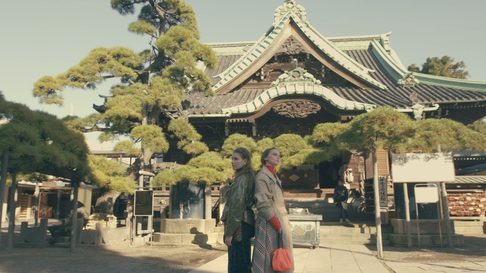
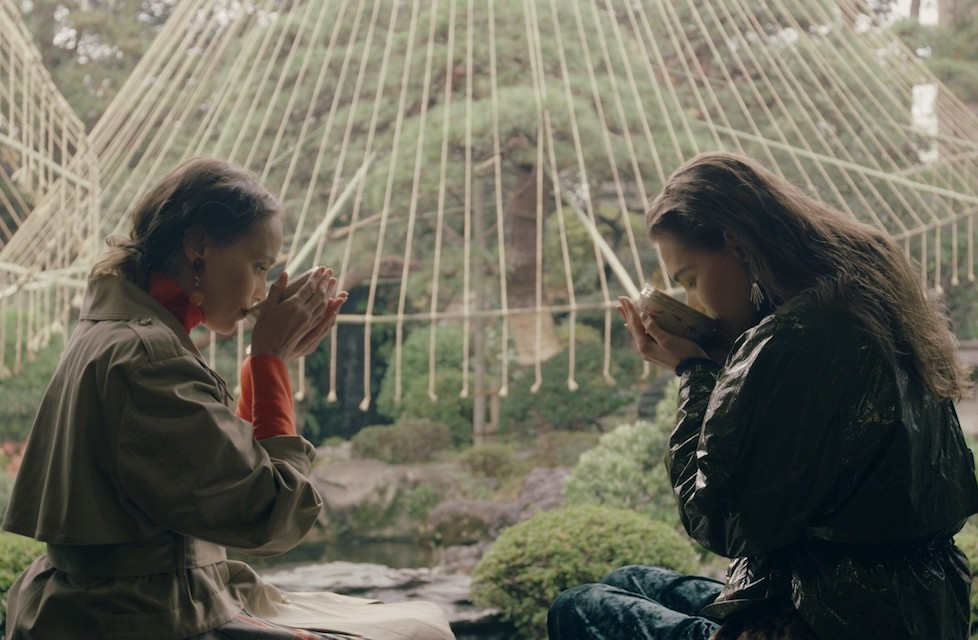
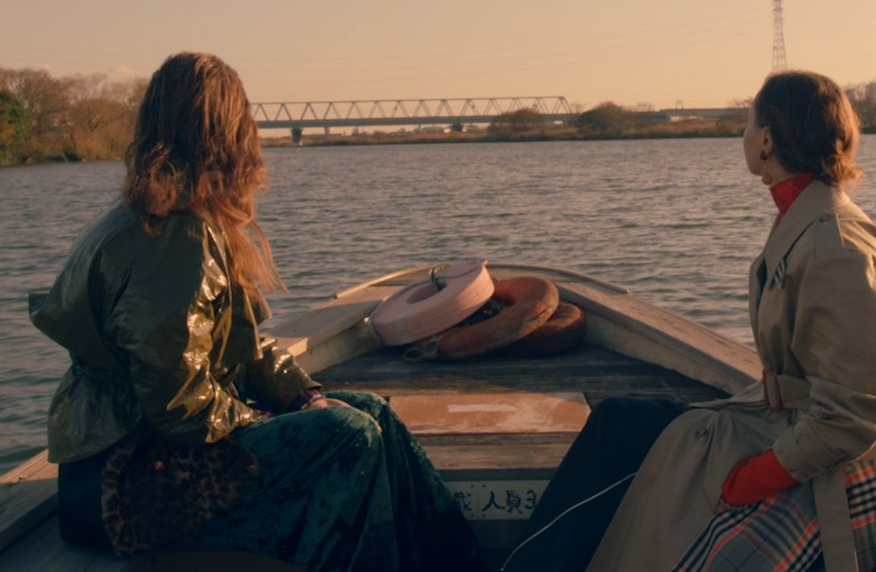

Токио · Сибамата · прогулка
Сибамата: старый Токио у реки Эдогава, храм, сад и лодочная переправа

Сибамата на северо-востоке Токио известна по фильмам «Мужчине живётся трудно», и многие японцы знают её название, ни разу здесь не побывав. Это квартал старого города, где врайон храма до сих пор живут прежняя вера и прежние ремёсла.
Район
Округ на трёх реках
Кацусика это единственный район Токио, который граничит сразу с двумя префектурами, Сайтамой и Тибой. Через него текут три реки: Эдогава, Накагава и Аракава. В эпоху Эдо здесь лежали рисовые поля, и район оставался деревенской окраиной. Всё изменилось после Великого землетрясения Канто 1923 года: на месте полей стали строить дома и фабрики. В 2019 году в Кацусике жило около 460 000 человек, и для многих он стал спальным районом, откуда ездят на работу в центр.
Сибамата первой в Токио получила статус важного культурного ландшафта страны. Это один из самых узнаваемых кварталов «ситамати», старого города простых горожан. После фильмов «Мужчине живётся трудно», которые снимали здесь, за Сибаматой закрепился образ места, где ещё живы старомодная доброта и участие к соседям.
Храм
Сибамата Тайсякутэн
Главная достопримечательность квартала это храм Сибамата Тайсякутэн, официально Дайкё-дзи. Его основали в 1629 году. Настоящая слава пришла к нему через полтора века. В храме хранился деревянный образ, который, по преданию, вырезал сам Нитирэн, но со временем он пропал. В 1779 году образ нашёлся, и после этого в Сибамату потянулись паломники из самого Эдо.
Нитирэн (1222–1282) был буддийским монахом, основателем школы, которая ставит в центр учения Лотосовую сутру. Храм Дайкё-дзи относится к этой школе.
К храму ведёт улица-«сандо», дорога паломников, и вместе они создают облик, какой встретишь только в Сибамате. Звуки Сибаматы вошли в список «100 звуковых пейзажей Японии, которые нужно сохранить».
Сибамата Тайсякутэн (Дайкё-дзи)
- Адрес
- Токио, Кацусика, Сибамата, 7-10-3
Дом
Ямамото-тэй: японский дом с западными чертами
Ямамото-тэй построен в японском стиле нового времени: в нём соединены традиционный стиль сёин и приёмы западной архитектуры. Дом окружает сад в чисто японском стиле, и иностранным путешественникам он особенно нравится.

Ямамото-тэй
- Адрес
- Токио, Кацусика, Сибамата, 7-19-32
- Телефон
- +81 3-3657-8577
- Часы работы
- 9:00–17:00
- Выходные
- третий вторник месяца (если это праздник, следующий будний день), в декабре третьи вторник, среда и четверг
- Цены / Вход
- 100 иен, до 15 лет бесплатно
Река
Переправа Ягири-но ватаси

На реке Эдогава работает Ягири-но ватаси, лодочная переправа. Из всех старых переправ Токио сохранилась только эта. Лодка везёт пассажиров через реку на противоположный берег, который относится уже к префектуре Тиба. В 2019 году билет стоил 200 иен.
Переправа Ягири-но ватаси
- Адрес
- Токио, Кацусика, Сибамата, 7, берег реки Эдогава
- Телефон
- +81 47-363-9357
- Цены / Вход
- 200 иен (2019 год)
Фильм
Сибамата на подиуме
В 2019 году район Кацусика вместе с медиакомпанией выпустил ролик о Сибамате, чтобы показать её старую веру и ремёсла. Его идея проста: модели в модной одежде идут по храму Тайсякутэн и по улице паломников, как по подиуму. Ролик снимал молодой режиссёр музыкальных клипов, а музыку написал известный музыкант: в живую мелодию старого города он вплёл звуки самой Сибаматы. Кадры из этого ролика и стоят в статье.
Если название Сибамата вам знакомо, а бывать здесь не приходилось, стоит приехать. Пейзажи квартала и тепло его жителей напоминают, за что любят Японию.
Отдел туризма района Кацусика
- Телефон
- +81 3-3838-5558